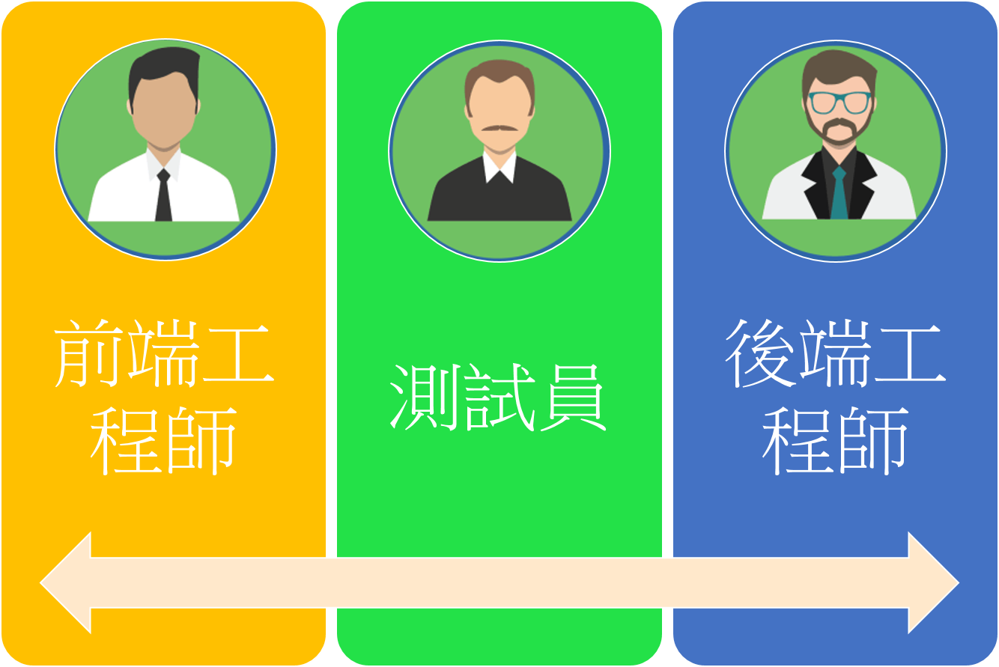
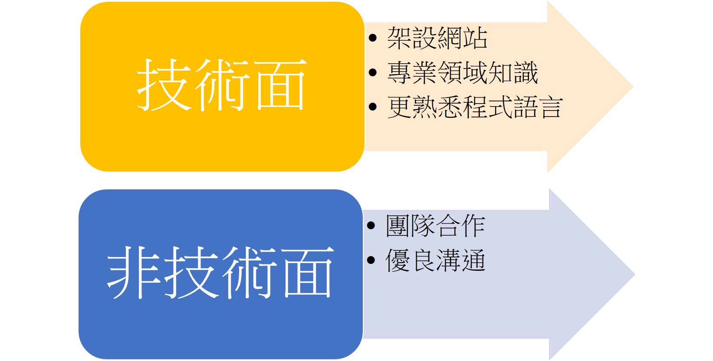
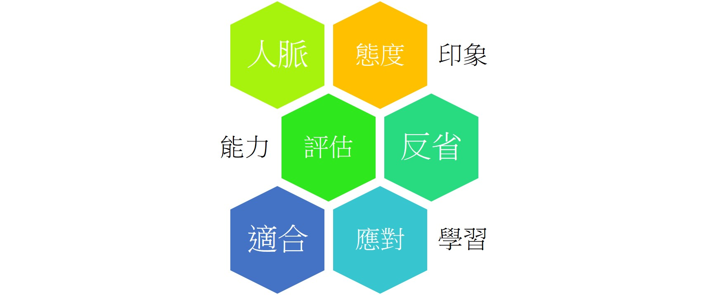

我們在實習中扮演的角色有三種，分別是測試員、前端工程師、後端工程師。重新分配一個專案就會交換一次，我們也從這三個不同的角色當中學習到不同的經驗，感受到不同的體驗，而主管的用意也是要我們在實習的一年當中就釐清我們需要的技能，找出喜歡有興趣且適合的角色，減少出去就業後才發現自己不適合的可能，並且在後半年可以選擇較有興趣的角色加深技術能力，並正式加入到開發團隊中，有更多的時間壓力，但是壓力使人成長，與厲害的人一同工作才可以變厲害 。
測試員的工作內容包含撰寫Test Case，測試的流程及項目，因為是要給工程師測試員甚至專案經理在他們各自的工作上作參考，因此需要以一個公正的角度寫一個大家看得懂的內容，另外測試員的另一項工作就是測試寫完的網站，檢查各項功能是否正常運作，將不符合Test Case的項目紀錄下來，並回報給工程師作修正測試員的工作內容包含撰寫Test Case，測試的流程及項目，因為是要給工程師測試員甚至專案經理在他們各自的工作上作參考，因此需要以一個公正的角度寫一個大家看得懂的內容，另外測試員的另一項工作就是測試寫完的網站，檢查各項功能是否正常運作，將不符合Test Case的項目紀錄下來，並回報給工程師作修正。
前端工程師需要負責的主要事務為撰寫設計使用者的操作業面，包含動態欄位及檢查控制項，然後將使用者改變的欄位資料往後傳送給後端做一連串操作或運算，本公司是使用Kendo UI做為前端的架構，是一套.Net 元件開發公司 Telerik推出的產品，在使用上相對extjs會相對較為簡單及輕巧。
後端工程師負責的部分是與資料庫溝通，我們公司使用的是SQL SERVER，在學校中有接觸過的軟體，但是公司的資料庫相對龐大，當中有數百個數千個的Table，欄位數量也是很多，因此在SQL語法查詢上就會很重要，而與資料庫溝通是利用Store Procedure或是其他方法從資料庫撈出需要的資料，並利用Controller傳送給前端的View做呈現，也需要將前端送來的資料做分析、運算，再進一步的操作，當中需要的邏輯要求相對前端來說較為嚴格，function也較多，並且需要精簡程式碼，否則對程式運行的效率會有很大的影響。
實習扮演的三種角色
在本次實習當中，技術面學習到如何架設一個完整的網站，剛來到這個公司，技術顧問就教導我們架設資料庫、Git協做概念、MVC架構出一個有CRUD的簡單網站，當開始接觸公司的作業後，加入更多運輸業領域的專業知識，撰寫更龐大的系統，學習到很方便的Store Procedure，很多重複的查詢就不用一而再再而三的浪費時間重寫，也學習到傳輸Xml檔案的方法，固定的格式可以使用取代欄位值得方法完成，當然，在程式語言上的使用也更加的熟悉，包含在學校不太了解的繼承、多型等等概念也透過實做而有進一步的認識。
在非技術面上，學習到與同事間的和睦相處，深深體會到團隊合作的重要性，因為CRP MIS部門有一半的同事位在上海，因此我們開會都會使用Skype進行討論，在分工合作上就會更為重要，我們公司就使用甘特圖記錄每個人的代辦工作、所需時間等等，可以一目瞭然彼此的進度為何，此時，溝通能力的重要性就格外明顯，記得有一個禮拜的任務是完成海運訂單查詢的前端頁面，而與我搭配的後端工程師是上海的同仁Wade，他在中菲行上海部門算是很資深的工程師，我在製作過程中遇到一個問題，於是我請教他幫我解決，我們利用skype分享畫面的方式一步步找到問題點，最後成功解決，如此一來一往花費彼此二十分鐘，在這種情況下，溝通成為我們之間的唯一橋梁，問題敘述的好可以大大減少雙方的時間成本，理解到優良溝通的重要性。
前陣子在一部影片中看到主角說在實習的過程中最重要的是拓展人脈，因為實習不會給予太重要的工作，反而是要給其他人看見你積極的態度，給別人好的印象，在將來或許可以依靠同事介紹好的工作。我對這影片有認同但也有反對，我認為給別人好的印象是應該的，但絕對不會是裝出來的，有老師給的建議是在完成當日的作業後，可以主動問問主管是否還有需要完成的事，第一，主管會對你印象深刻，可能會有機及等正面想法出現，第二是需要完成的事通常是沒人要做的麻煩或困難事，這對我們實習生來說是一個很好可以充實自我的機會，雖然我在公司通常是做到下班還沒做完，但是我認為這是實習的另一個好處，打好自己的基礎，看看學校與社會業界的差別，了解自己缺乏的是什麼，將來想走的路是什麼，可以在利用大四下短暫的學生生涯好好充實自我，盡量彌平出來就業的差異。
在實習的過程中，主管問我們最多的一句話是'完成需要多久時間？'，這不僅是要評估整個組織的時程，更是要我們衡量自己的能力範圍，解析目前手上的工作，切割成數個部分再一個個評估所需要的時間，當專案超過自己所預估的時間就要回頭捫心自問哪裡出了問題，是哪個功能太複雜？遇到不瞭解的邏輯或技術？發現後儘速解決，有目標有效率的自我反省才可以進步。
我認為實習可以看見我們的渺小，發現自己的不足，瞭解業較需要的技能是甚麼，利用還是學生的角色，在出社會前趕緊修正自己的腳步，領先在起跑點，也可以利用這個機會看看自己是不是喜歡資訊這個行業，理解當中各個角色在專案中的負責工作，看看自己適合不適合，也可以在工作過程中仔細觀察大家的相處方式，在社會中人與人之間的應對進退，相信一定和學校大不相同，透過本次實習讓我在各個方面都是受益良多。
首先真的很感謝系上有提供這個機會讓我們到真實的業界中體驗瞭解我們的需要學習、加強的技能，我認為系上可以多舉辦一些活動、演講或是開設課程是有關資訊業中各個角色的比對，方便學生多了解業界中對者些角色期待的樣子、所需要的技能，可以使我們更有方向的前進，另外加強實作也是很重要的，可以一步一步加強作業的難度，還有開發工具的應用也是一大重點，能淋漓盡致的使用一定會差很多的！
瞭解資訊業的各個角色